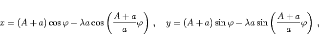
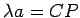
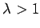
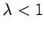
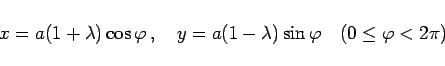
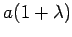
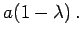
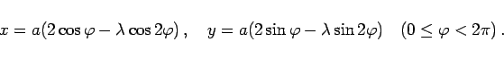
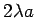
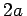

Verlängerte und verkürzte Epi- und Hypozykloide oder Epi- und Hypotrochoide sind Kurven, die von einem entweder außerhalb oder innerhalb eines Kreises befindlichen Punkt beschrieben werden, der sich auf einem vom Kreismittelpunkt ausgehenden und mit dem Kreis fest verbundenen Strahl befindet, während der Kreis an einem anderen Kreis entweder außen (Epitrochoide) oder innen (Hypotrochoide) abrollt, ohne dabei zu gleiten.
Die Gleichung der Epitrochoide lautet in Parameterform
|  | (2.235a) |
wobei A der Radius des festen Kreises ist und a der des rollenden.
Für die Hypozykloide ist ,,+a`` durch ,,-a`` zu ersetzen.
Über  wird mit  bzw.  bestimmt, ob es sich um die verkürzte oder verlängerte Kurve handelt.
|  | (2.235b) |
zur Ellipse mit den Halbachsen  und 
|  | (2.235c) |
Hinweis: Bei der Behandlung der PASCALschen Schnecke wurde mit a eine Größe bezeichnet, die hier  heißt, und mit l der Durchmesser . Außerdem ist das Koordinatensystem geändert.